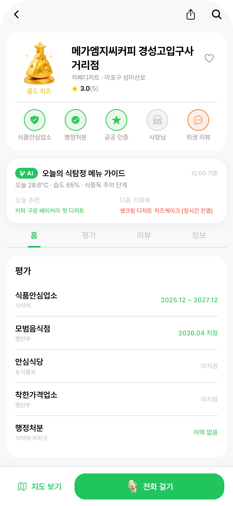
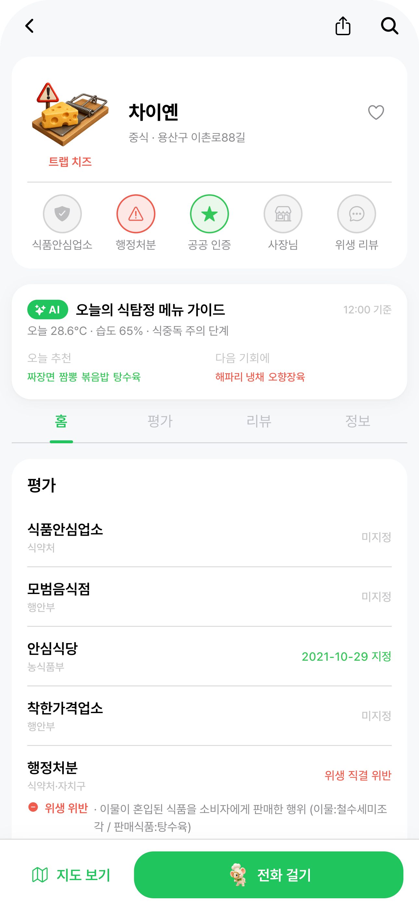

3가지 기능 단위로 외부 데이터를 식탐정 점수·메뉴 가이드에 반영했어요
Google Places API로 수집한 외부 리뷰를 위생·청결·서비스·맛 토픽으로 분류,
위생 부정 키워드 빈도를 사용자 점수 가중치로 사용합니다.
식약처 I2630·새올민원의 위반사유 텍스트를 의미 기반으로 분석,
위생 직결 여부 + 심각도를 라벨링해 트랩 치즈 트리거·점수 페널티(−10 ~ −50)에 반영합니다.
오늘의 기후·식중독 지수를 입력으로, 해당 가게의 메뉴 중 오늘 안전한 메뉴 / 회피 메뉴를 AI가 즉시 분류·추천합니다.

